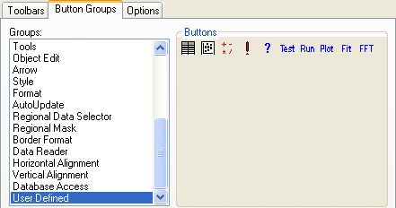
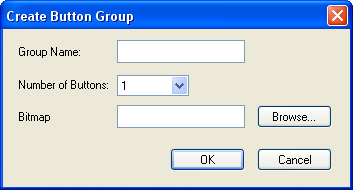
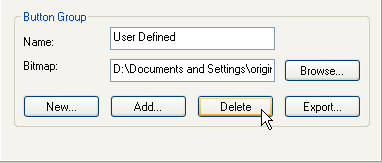

User-Defined and Custom Toolbars and Toolbar Buttons
UserDef-Custom-Toobar-Button
Origin ships with a built-in Button Group labelled User Defined. These buttons can be selected individually and hooked up to your script/code to give you toolbar access to your custom routines. In addition, Origin allows you to create a new button group using your own bitmaps.
Showing or hiding toolbars
To hide/show all toolbars in the Origin interface：
- Click View: Hide Toolbars menu.
or
- Press the hotkey Ctrl+Alt+R.
You use the Customize Toolbar dialog box to show or hide specified toolbars.
To show or hide Origin specified toolbars:
- From the Origin menu, select View:Toolbars.
- Select the Toolbars tab, select toolbars to show when Origin runs, and click Close.
Programming a User-Defined toolbar button to perform a custom task
The User-Defined button group includes 10 non-preprogrammed toolbar buttons that can be associated with, and used to run, your custom tasks.

To associate a User-Defined group button with a custom task:
- Open the Customize Toolbar dialog box (View:Toolbars) and select the Button Groups tab.
- Select the User Defined button group from the Groups list.

- Select a button in the Buttons group.
- Click on the Settings button in the Button group. This opens the Button Settings dialog box.
- Edit the Button Settings dialog box and click OK to complete the programming of your custom button.
Adding a button group that performs custom tasks
In addition to programming buttons in the User Defined button group, you can add new groups of custom buttons to Origin. There are three methods for doing this:
Method 1: Create a new button group
- Click the New button in the Button Group group. This opens the Create Button Group dialog box.

-
Specify...
- The button Group Name. If you enter the name of an existing button group, Origin will prompt you to Rename, Merge, or Replace the existing button group.
- The Number of Buttons in the group (maximum number of buttons for a group is 50).
- The Bitmap file for the button(s). The bitmap must be a 16 color bitmap. Additionally, the bitmap should consist of a 16 pixel by 16 pixel segment for each button in your custom button group. So, for instance, if you wished to create a 5 button group, your bitmap would have to measure 16 pixels high by 80 pixels wide. Origin will parse the bitmap using the Number of Buttons specification.
- Click OK. If all of the information that you provided was valid, Origin opens the Save As dialog box. By default, the Group Name displays in the File Name text box.
- Click Save to save your new group settings to the specified initialization file.
After completing these steps, your new button group displays in the Groups list box (on the Button Groups tab of the Customize Toolbars dialog box). You can now customize the button settings for the buttons in your group as per the procedure outlined in the previous topic -- Programming a User-Defined Toolbar Button to Perform a Custom Task.
Method 2: Copy another Origin user's custom button group to your Origin program folder
A custom button group (including the User Defined group) has:
- An associated initialization (.INI) file: The initialization file is created when you click the New button in the Button Group group and then edit the Create Button Group and the Save As dialog boxes.
- A bitmap file: The bitmap file is specified in the Create Button Group dialog box. This information is then added to the button group's initialization file.
- A LabTalk script file (OGS) and any support files: The LabTalk script files are specified for each button in the group in the respective Button Settings dialog box. This information is then added to the button group's initialization file.
If another Origin user (for example, a user on your network) has a custom button group that you want access to:
- Copy the user's custom .INI file, bitmap file, and LabTalk script file plus any support files to your Origin folder.
- Run your copy of Origin(Pro).
- From the menu, select View:Toolbars and select the Button Groups tab.
- In the Button Group group, click Add. This opens the Add Button Group dialog box.
- Specify the path to the .INI file for the button group and then click the OK button. The new button group now displays in the Groups list.
Note that the preferred way to exchange button groups is to create an .OPX file (see Method 3).
Method 3: Install button groups that have been exported to an .OPX file
For information on installing button groups that have been exported to an .OPX, see:
Modifying a custom button group
Controls on the Button Groups tab of the Customize Toolbar dialog box (View:Toolbars) allow you to remove or modify the bitmap for custom button groups, and to remove and add buttons to custom button groups.
- To add a button to a custom button group:
- Select the desired group from the Groups list box.
- Type the new path and file name in the Bitmap text box, or click the Browse button to locate the new bitmap file.
|
Note: You can also modify the bitmap for the User Defined button group.
|
- To remove a button from a custom button group:
- Select the button that you want to delete.
- Click the Delete button in the Button group.
- To remove a custom button group:
- Select the button group that you want to remove from the Groups list box.
- Click the Delete button in the Button Group group.

- An attention prompt asks for verification before removing the group.
- If you click Yes, Origin removes the custom button group from the Groups list box.If any buttons from this (removed) group were placed on toolbars, those buttons will no longer function after you remove the group.
|
Note: You cannot remove built-in button groups.
|
- To modify the bitmap for a custom button group:
- Select the desired group from the Groups list box.
- Type the new path and file name in the Bitmap text box, or click the Browse button to locate the new bitmap file.
|
Note: You can also modify the bitmap for the User Defined button group.
|